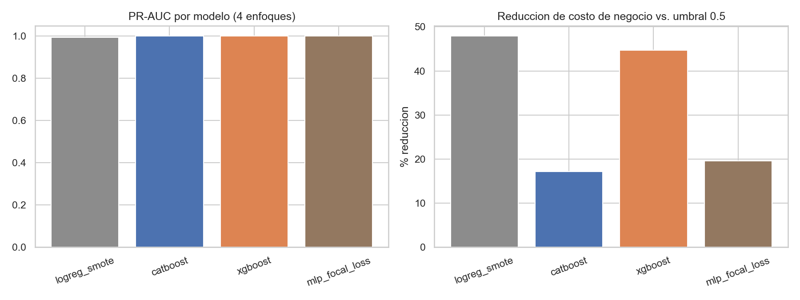
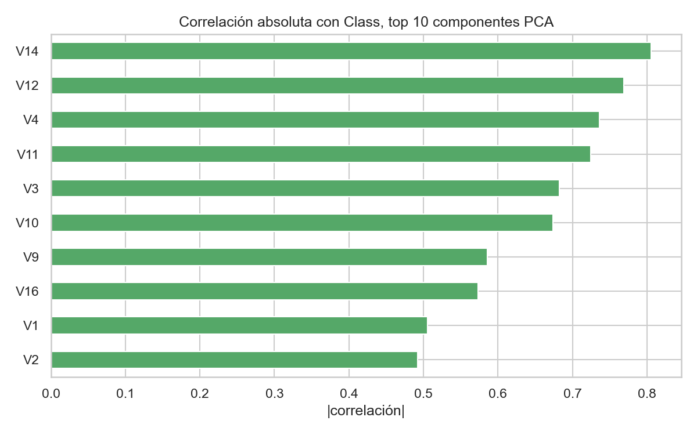
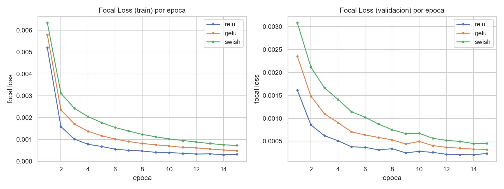
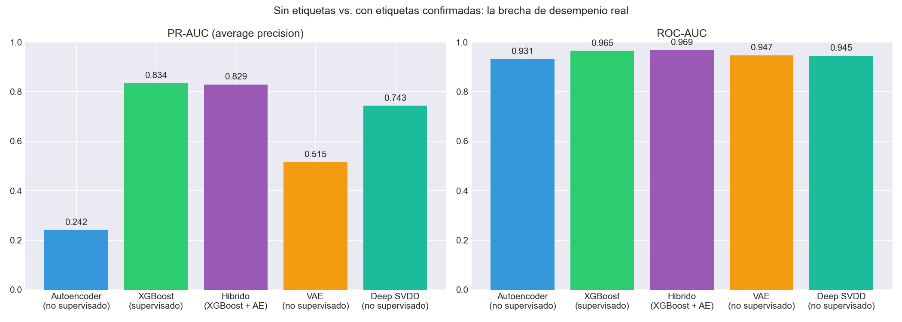
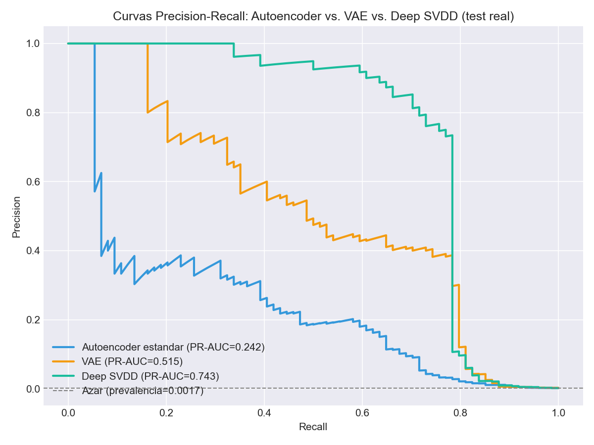
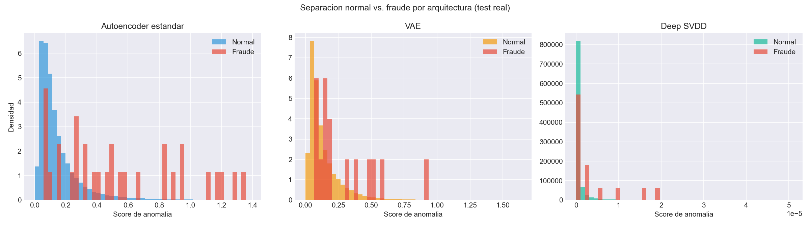
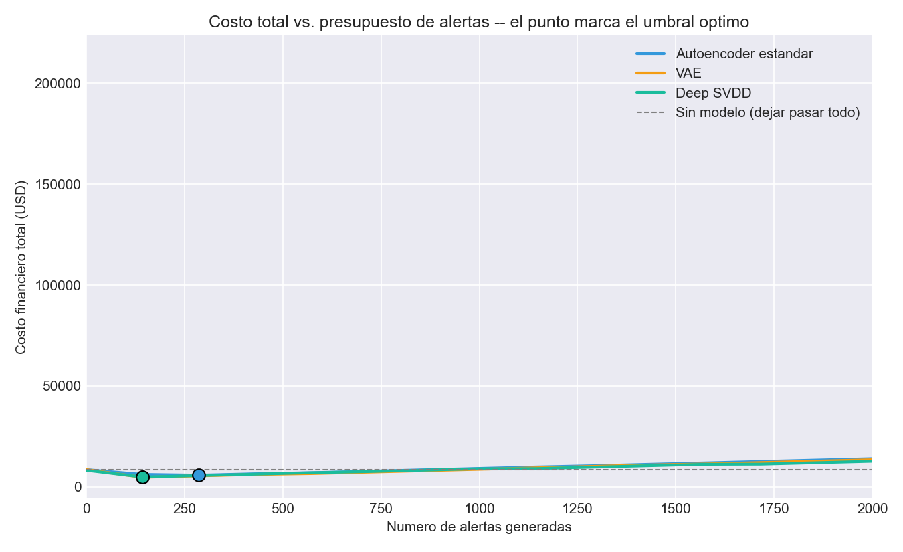

Fraud Detection Techniques Lab
Two real-dataset approaches to credit card fraud, from the same lab: a supervised model-iteration benchmark, and an unsupervised-vs-supervised comparison that quantifies exactly what confirmed fraud labels are worth.
① Catching Credit Card Fraud
Fraud classification on 568,629 real 2023 credit card transactions — iterating from a Logistic Regression + SMOTE baseline to CatBoost/XGBoost to a PyTorch MLP trained with Focal Loss, validated for train/test distributional health, and calibrated by a business cost matrix instead of the default 0.5 threshold.
Source on GitHub · part of the Fraud Detection Techniques Lab
Dataset
V1–V28 (same anonymization scheme as the classic ULB dataset) plus
Amount. License: see the dataset page on Kaggle. Downloaded for this run on 2026-10-01.
This means there are no raw entity columns (card/device/IP) for dynamic per-entity aggregation, unlike IEEE-CIS's original multi-table schema — disclosed explicitly rather than pretended away. Adversarial validation (train-vs-test classifier) confirms a healthy split: AUC 0.5005, statistically indistinguishable.
Techniques
- Class imbalance: SMOTE oversampling baseline, plus class-balanced CatBoost/XGBoost.
- Model iteration: Logistic Regression → CatBoost → XGBoost → PyTorch MLP with Focal Loss (ReLU/GELU/Swish compared).
- Hyperparameter tuning: Optuna, 30-trial search over XGBoost, optimizing PR-AUC on held-out test.
- Decision policy: cost-matrix threshold calibration instead of the default 0.5 cutoff.
- Deployment: CatBoost exported to ONNX; XGBoost hand-reimplemented in pure Rust.
- Cross-language verification: an independent R GLM cross-checks the Python logistic baseline.
Results — real run, 20% held-out test set
| Model | ROC-AUC | PR-AUC | Cost @ 0.5 | Cost @ best threshold | Reduction |
|---|---|---|---|---|---|
| LogReg + SMOTE | 0.9942 | 0.9950 | 257,950 | 134,440 | 47.9% |
| CatBoost | 1.0000 | 0.9999 | 930 | 770 | 17.2% |
| XGBoost | 1.0000 | 1.0000 | 470 | 260 | 44.7% |
| XGBoost, Optuna-tuned (30 trials) | — | 0.999988 | — | 180 | — |
| MLP + Focal Loss | 1.0000 | 1.0000 | 1,430 | 1,150 | 19.6% |
Business cost = 100 units per undetected fraud (false negative) + 10 units per legitimate transaction wrongly flagged (false positive).



Honest caveat
Reproduce it
git clone https://github.com/Rxyxs/fraud-detection-techniques-lab.git
cd fraud-detection-techniques-lab/01-credit-card-fraud-multilang
python -m venv venv && venv\Scripts\activate
pip install -r requirements.txt
kaggle datasets download -d nelgiriyewithana/credit-card-fraud-detection-dataset-2023 -p data/raw --unzip
pytest -q② Deep Autoencoder vs. Supervised XGBoost
A quantified answer to a question every fraud/AML team eventually asks: "how much are we losing by not having confirmed labels yet?" Three unsupervised PyTorch architectures (Autoencoder, VAE, Deep SVDD) trained on only legitimate transactions — the realistic day-one scenario — benchmarked against a supervised XGBoost trained once fraud confirmations exist, on the real ULB/Worldline dataset (284,807 transactions, 492 confirmed frauds). A cost-sensitive threshold optimizer turns each model's raw score into an actual alerting decision.
Source on GitHub · part of the Fraud Detection Techniques Lab
Dataset
V1–V28; Time/Amount untransformed.
Downloaded for this run on 2026-10-01 (exact row count verified: 284,807).
Headline comparison — real held-out test set
| Model | ROC-AUC | PR-AUC |
|---|---|---|
| Autoencoder (unsupervised, zero labels used) | 0.931 | 0.242 |
| XGBoost (supervised, real labels) | 0.965 | 0.834 |
| Hybrid (XGBoost + autoencoder feature) | 0.969 | 0.829 |
ROC-AUC alone suggests the autoencoder is "almost as good" (0.931 vs. 0.965). PR-AUC tells the real story: going from zero labels to real confirmed labels is a 3.4x jump in average precision (0.242 → 0.834).

AE vs. VAE vs. Deep SVDD — same protocol, different objective
| Model | ROC-AUC | PR-AUC |
|---|---|---|
| Autoencoder (standard) | 0.931 | 0.242 |
| VAE | 0.947 | 0.515 |
| Deep SVDD | 0.946 | 0.743 |
Deep SVDD's PR-AUC (0.743) is roughly 3x the standard autoencoder's (0.242) and approaches XGBoost's supervised 0.834 — without ever seeing a fraud label. Dropping reconstruction entirely and concentrating normal transactions into a hypersphere separates this dataset's fraud pattern substantially better than learning to reconstruct it.


Cost-sensitive threshold optimization — real financial impact
| Model | Alerts | TP/FP/FN | Total cost | Reduction |
|---|---|---|---|---|
| Autoencoder | 286 | 47/239/27 | $5,731.99 | 32.4% |
| VAE | 143 | 55/88/19 | $4,683.26 | 44.8% |
| Deep SVDD | 143 | 58/85/16 | $4,808.88 | 43.3% |
| XGBoost | 143 | 63/80/11 | $4,636.08 | 45.4% |
Cost matrix: fixed $5 per false-positive review; false-negative cost = the real dollar amount of that missed fraud. Baseline (no model): $8,483.36 total fraud on 74 confirmed test-set frauds.

Honest caveat — a negative result, reported as found
Reproduce it
git clone https://github.com/Rxyxs/fraud-detection-techniques-lab.git
cd fraud-detection-techniques-lab/04-autoencoder-vs-supervised
python -m venv venv && venv\Scripts\activate
pip install -r requirements.txt
python data/download_dataset.py
pytest -qPablo Reyes — github.com/Rxyxs. Code: MIT.